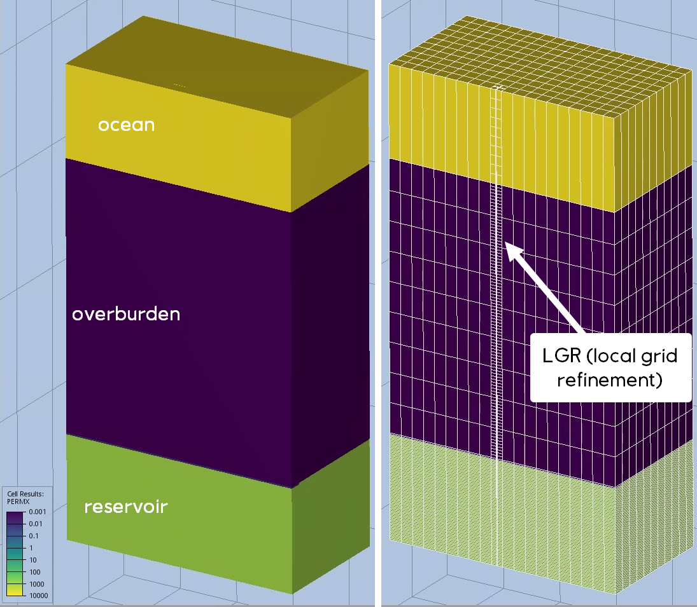
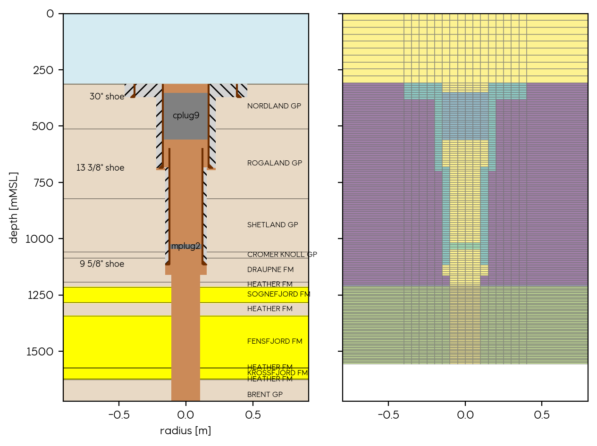

Detailed Simulation workflow
To set up a CIRRUS (PFLOTRAN-OGS) simulation run, users must first complete the pre-processing and preliminary assessment phase, which involves creating Well and Pressure instances. These instances provide the necessary wellbore and pressure data for the simulation. Additionally, users need to have template CIRRUS input files that outline the simulation setup (TEMP-0.in) and the grid (TEMP_GRD.grdecl). These templates describe a basic "shoebox" model with a layer cake grid representing the vertical space from mean sea level to the reservoir, including the ocean water column and overburden rocks.
The resulting simulation model is a 3D representation of the wellbore, with the well represented in a logically refined grid (LGR) at the center of the model. The zonation and assignment of transport properties in the model reflect the discrete sections of the well (cement bond, cement plugs, open hole). Casings are not discretely represented as grid cells but are modeled using transmissibility multipliers, which are set to zero by default to act as perfect barriers. The transport properties of the cement materials are assigned during the Well instance creation, while the properties of the reservoir and overburden rocks need to be manually set.

Figure 1: Comparison of the template grid with updated overburden thickness (left) and the resulting grid after LGR generation (right).Users should start with the canonical GaP and WellClass notebooks, especially notebooks/02_gap_grid.ipynb and notebooks/03_wellclass_to_gap.ipynb. Simulator-dependent experiments require copies of the template files and explicit external-tool setup; see experiments/README.md for the optional command-line utilities.
For a repeatable command-line workflow, a multi-sheet workbook can be used as the input deck. Its physical well sheets are converted to canonical WellClass JSON, while GridPolicy and DesignMatrix are parsed as separate GaP/CIRRUS simulation inputs used to parameterize the deck. Legacy SubsurfaceAssumptions sheets remain supported:
XLSX -> well_input.json -> parameterized <case_stem>.in
-> CIRRUS initialization -> .EGRID + .INIT
-> WellProcessed -> WellDataFrame -> LGRBuilder
-> <case_stem>_LGR.grdecl -> final CIRRUS simulationWorkbook-driven runs name generated files by a case stem, <well>_<case_name>, derived from the workbook Metadata name and the selected DesignMatrix case (for example wildcat_baseline). The rules and the batch layout are described in the multi-scenario section of the installation guide. TEMP-* names are reserved for the canonical template assets.
Create a starter workbook and stage a case:
python runscripts/create_well_input_workbook.py --output well_input.xlsx
python runscripts/prepare_init_case_from_xlsx.py \
--xlsx well_input.xlsx \
--output-root case \
--write-well-json \
--sim-command "runcirrus -i -nm 6 {deck}"Ready-to-edit examples are provided beside the canonical fixtures:
test_data/examples/wildcat/wildcat_workbook.xlsxtest_data/examples/smeaheia/smeaheia_workbook.xlsx
Their well-construction sheets are copied from the corresponding canonical JSON files. GridPolicy and DesignMatrix contain illustrative scenario values that must be reviewed before running CIRRUS. Regenerate both examples after changing their source fixtures with:
python runscripts/create_example_well_workbooks.pyGridPolicy lengths use metres in the model vertical-depth coordinate; dx and
dy are metres, and permeability uses mD. New workbooks state
depth_unit=m and permeability_unit=mD; legacy workbooks default to those
units. Required fields are top_depth and target_dz_water,
target_dz_overburden, and target_dz_reservoir. Defaults: reservoir_thickness
400 m; cells_per_layer 400; minimum layer counts 1; maximum layer counts
unset; nx/ny 20; dx/dy 200 m; reservoir_permx 1000 mD;
overburden_permx 0.001 mD; aquifer_permx unset; aquifer_layers 3;
porv_multiplier 2000; permz_multiplier 0.1. Spacing and layer counts must
be positive, permeabilities nonnegative, and maximum layer counts cannot be
below their minimums. water_depth comes from Header.ground_elevation
(converted from ft when declared); legacy GridPolicy values for water depth,
reservoir top, and bottom depth are ignored because those boundaries are
derived from the header and well stratigraphy.
Scenario depths (z_fluid_contact, z_resrv, and
overburden_datum_depth) are TVDMSL metres; scenario pressures are bar. New
workbooks include depth_unit=m and pressure_unit=bar; legacy scenario rows
default to these units. The WellClass-to-GaP adapter expects processed interval
depths in TVDMSL metres and all open-hole, casing-cement, and barrier
permeabilities in mD. Unsupported units, missing required permeabilities, and
negative or non-finite permeability values fail before LGR generation.
Scenario salinity is the NaCl mass fraction of the solution (kg salt / kg
solution), default 0.032; new workbooks declare salinity_basis=mass_fraction
and legacy values are interpreted the same way. The PVT model uses this
fraction for the Laliberté brine-density correction. PressureTable evaluates
the corresponding reference density at ground temperature and 1.01325 bar, then
uses its existing constant-density hydrostatic approximation. Generated CIRRUS
SALT_TABLE blocks use CONCENTRATION_UNITS MASS and the same mass fraction at
both ends of the generated SALTVD interval. This keeps pressure and deck inputs
consistent; it does not yet support a depth-varying salinity profile.
Each DesignMatrix row is one case sharing the same physical well. Optional
reservoir_permx and overburden_permx values override the corresponding
GridPolicy values. cb_perm and barrier_perm override casing-cement and
plug permeability. Their companion cb_perm_interval and
barrier_perm_interval columns select the interval by its name in the
HoleCasings or Plugs sheet; the default ALL applies the value to every
interval of that type. For a named interval, only that interval changes. Other
intervals retain their own workbook permeability, falling back to the CLI
default when none is provided. Interval names used as targets must be unique
within the relevant sheet and must match exactly. A target other than ALL
requires its corresponding permeability value. oh_perm remains a fixed
high-permeability workflow default, not a DesignMatrix sensitivity variable.
Effective values and targeted overrides are recorded in scenario.json, and
the resolved grid policy is saved in grid_policy.json.
After .EGRID and .INIT have been produced, build the LGR/CARFIN include:
python runscripts/build_lgr_from_json.py \
--well-json case/well_input.json \
--sim-case case/model/wildcat_baseline \
--output-folder case/include \
--lgr-file-stem wildcat_baseline_LGRThe first command uses FINAL_DATE = START_DATE and disables the case LGR include for initialization. The second command writes wildcat_baseline_LGR.grdecl; --lgr-name sets the CARFIN LGR name inside it (default TEMP_LGR). The same deck can then be configured for the final simulation by enabling that include and setting the requested final date. CIRRUS must be installed separately and available on PATH, or its absolute executable path can be supplied in --sim-command.
The wrapper performs the complete handoff in one command:
python runscripts/run_workbook_to_cirrus_lgr.py \
--xlsx well_input.xlsx \
--output-root case \
--sim-command "runcirrus -i -nm 6 {deck}"It stages the workbook, runs CIRRUS initialization, verifies .EGRID and .INIT, writes <case_stem>_LGR.grdecl, and configures the same deck for its final run. Add --run-final only when the final CIRRUS simulation should be launched immediately.
The wrapper validates that the configured CIRRUS executable is available before running. It writes captured output for each phase to case/logs/<case_stem>_initialization.log and, when --run-final is used, case/logs/<case_stem>_final.log. Errors report the log path, exit code, and whether the required .EGRID/.INIT files were found.
Notebook 3 also supports an optional generated-grid mode for visual QC after a wrapper run. Set input_mode = 'generated' in notebooks/03_wellclass_to_gap.ipynb and point generated_case_root at a completed case directory; the notebook reads the case's scenario.json to locate well_input.json, model/<case_stem>.EGRID, and model/<case_stem>.INIT.
To compare completed scenarios, select a baseline case and compare the static grid artifacts with the dynamic pressure and saturation results:
uv run python runscripts/compare_scenario_outputs.py \
--output-root cases \
--baseline base_case \
--report cases/scenario_comparison.jsonThis is the default initialization/physics sensitivity comparison: grid geometry
must remain invariant, while static INIT properties (for example PERMX,
PORO, and EQLNUM) and selected UNRST quantities may vary with the case
assumptions. Each newly generated case records its effective GridPolicy in
grid_policy.json, so the report can distinguish property-policy changes from
geometry-affecting changes. A geometry-affecting policy change is flagged for a
separate grid sensitivity study rather than treated as an ordinary batch
variation. The baseline defaults to the first case in sorted order when
--baseline is omitted. This comparison requires completed simulator output
and does not rerun CIRRUS.
Grid Build Pipeline (Canonical)
The supported simulator-facing workflow is intentionally explicit:
- A template input deck (
TEMP-0.in) references a template GRDECL (TEMP_GRD.grdecl). - The GRDECL references a vertical geometry include (
tops_dz.inc) that definesTOPSandDZ. - The staged initialization case also carries the referenced
co2_db_new.datdatabase. The staging helper removes the later-stageTEMP_LGR.grdeclinclude from the initialization copy ofTEMP_GRD.grdecl. - An initialization-only simulator run (no production timestepping objective) produces
.EGRIDand.INIT. - SCREEN reads
.EGRIDand.INITto build LGR/CARFIN output. - The generated LGR include is imported into a run deck for later simulation phases.
This means geometry changes should be applied upstream (template + generated include), then regenerated via the initialization run. Avoid hand-editing generated .EGRID/.INIT structures.
Canonical Template Assets
To keep the process reproducible, one canonical template case is retained in-repo:
test_data/examples/wildcat-pflotran/model/TEMP-0.intest_data/examples/wildcat-pflotran/include/TEMP_GRD.grdecltest_data/examples/wildcat-pflotran/include/co2_db_new.dattest_data/examples/wildcat-pflotran/include/tops_dz.inc
These files are treated as golden assets and protected by regression tests. Use them as the source for new initialization cases instead of editing ad hoc copies.
Staging a New Initialization Case
Use the helper script to copy the canonical template and regenerate tops_dz.inc from explicit depths and layer counts:
python runscripts/prepare_init_case.py \
--output-root test_data/examples/my_case \
--top-depth 4 \
--water-depth 104 \
--reservoir-top 1004 \
--bottom-depth 1504This command prepares files only. You can optionally pass an external simulator command template to run the initialization step in the same workflow:
python runscripts/prepare_init_case.py \
--output-root test_data/examples/my_case \
--top-depth 4 \
--water-depth 104 \
--reservoir-top 1004 \
--bottom-depth 1504 \
--sim-command "runcirrus -i -nm 6 {deck}"{deck} is replaced with the staged deck path: TEMP-0.in by default, or <case_stem>.in when --case-stem is given.
The first run should not include TEMP_LGR.grdecl; that file belongs to the later GaP CARFIN/LGR stage after .EGRID and .INIT have been produced. The staged initialization case is therefore self-contained with the coarse-grid GRDECL, tops_dz.inc, and co2_db_new.dat.
The current GaP path expects a suitable coarse grid before LGR refinement. Future coarse-grid accommodation ideas are recorded in GaP Roadmap; the legacy workflow recipes are retained under experiments/legacy/ as references only.
The equilibration is divided into two zones: 'overburden_water' for the brine in the overburden and ocean water column, and 'CO2_column' for the reservoir, defined by a gas-water contact depth and pressure. The simulation is initially set to run for zero days (START_DATE = FINAL_DATE) to perform only an initialization run, which generates the EGRID file necessary for building the LGR.
The staged GRDECL assigns EQLNUM 1 to the water and overburden layers and EQLNUM 2 to reservoir layers, based on the workbook-derived layer counts. overburden_water uses a WellClass-interpolated hydrostatic pressure at an explicit or midpoint overburden datum. In GAS_WATER mode, CO2_column uses DATUM_D = WGC_D = z_fluid_contact and PRESSURE = p_fluid_contact. Both regions share generated temperature and salt tables that cover the required depth range.
In the refined LGR, EQLNUM 2 is restricted to layers below the base of the deepest processed plug whose base lies above the reservoir. This preserves the plug as part of the shallow equilibration region and prevents the CO2 equilibration region from being assigned above that barrier.
After the EGRID file is produced, the LGRBuilder functionality is used to set up the LGR, update transport properties, zonation, and equilibration zones. The user must define the upper limit of the 'CO2_column' equilibration zone, which may extend into the wellbore to represent a continuous column of CO2 connecting the wellbore to the reservoir. This upper boundary is typically defined by the base of the first cement plug above the reservoir, but the user must specify this.

Figure 2: Input wellbore visualization from theWell instance (left) and the resulting grid representation colored by permeability in the simulation model (right), with a scale similar to Figure 1.
Once the LGR is set up, the END_DATE can be updated to the desired simulation end date. Users can opt for an initialization run to verify the well representation in the simulation grid or proceed with a full simulation run. The duration of the simulation results will depend on the complexity of the problem, the number of nodes, and other setup parameters.
Upon completion of the simulation, the output can be explored using standard CIRRUS post-processing tools and techniques. Users have the flexibility to load the simulation results into visualization software such as ResInsight, which provides advanced capabilities for analyzing and interpreting reservoir simulation data. Additionally, users can leverage the modules available in this repository to optimize visualization and gain deeper insights into the simulation outcomes.
Limitations
The SCREEN workflow with CIRRUS provides a valuable approach for simulating wellbore dynamics within the context of CCS projects. However, users should be aware of the following limitations:
-
Porous Media Flow: CIRRUS is primarily designed for porous media flow simulations. While the SCREEN workflow adapts it for wellbore dynamics, it does not include the detailed physics for pipe or open wellbore modeling.
-
Geomechanics: The current workflow does not include coupled geomechanics. Overburden flow is driven by assigned transport properties without accounting for mechanical deformation.
-
Degradation and Corrosion: Complex degradation or corrosion processes within the wellbore are not modeled within CIRRUS.
-
Vertical Wells: The method is currently applicable only to vertical wells and does not support deviated or horizontal well trajectories.
-
Leakage Pathways: Leakage pathways such as holes in the casing are not automatically handled and must be manually added to the GRDECL file produced by the scripts.
-
CO2 Column Initialization: The simulation is initialized with a CO2 column, which allows for the focus on long-term leakage but does not consider short-term dynamics.
-
Boundary Conditions: The workflow does not support time-varying boundary conditions, which may be relevant for certain simulation scenarios.
-
Grid Representation: The use of a Cartesian grid to represent a cylindrical wellbore can introduce volumetric errors due to the transformation into a prism shape.
-
Uncertain Parameters: Cement permeability and transport properties of the overburden are uncertain and can significantly impact simulation results.
-
Grid Resolution: Elements smaller than the LGR resolution may not be accurately represented. While cement bonds are fully represented, their thickness might be smaller than the minimum grid size. Casings are modeled as transmissibility multipliers and act as flow barriers, which may not capture the full complexity of wellbore integrity.
These limitations should be considered when interpreting simulation results and when planning further development of the workflow to ensure that the simulations align with the specific objectives and conditions of the CCS project.